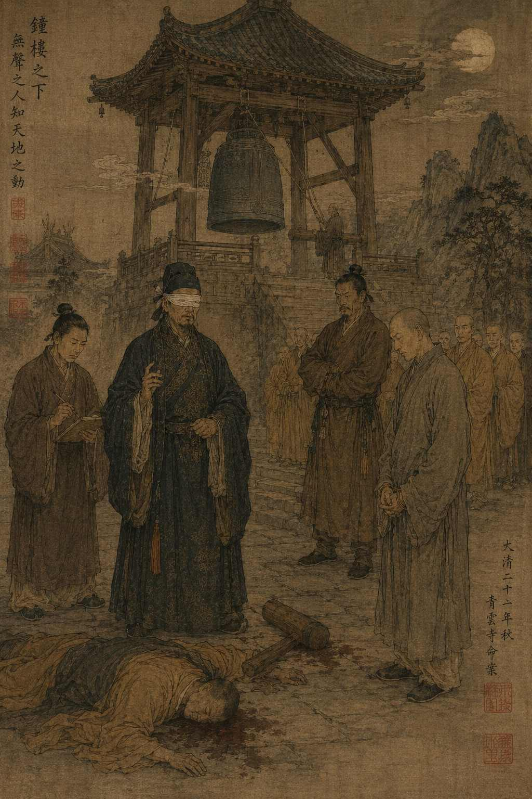

Дело о поющем колоколе

В северных провинциях Империи монастыри часто строили в местах, где ветер говорил громче людей. Одни стояли на вершинах гор, другие — над речными ущельями, и почти в каждом из них имелся колокол, чей голос должен был напоминать монахам о бренности человеческой жизни. Старые наставники утверждали, что Небо любит звук бронзы, потому что бронза хранит память о времени лучше дерева и бумаги.
Именно из-за колокола нас и вызвали в монастырь Цинъюнь ранней осенью двадцать первого года правления Сына Неба.
Настоятеля нашли мертвым возле колокольной башни. Голова его была разбита тяжелым деревянным молотом, которым монахи созывали братьев на молитву. Главным подозреваемым оказался молодой глухой монах по имени Жэнь.
Дело казалось простым.
Несколько братьев утверждали, что незадолго до смерти настоятель и Жэнь поссорились. Ночью же все услышали тревожный звон колокола. Когда монахи выбежали наружу, настоятель уже лежал мертвым, а рядом стоял Жэнь с окровавленными руками.
Сам Жэнь отрицал вину и утверждал, что просто нашел тело. Однако его слова выглядели нелепо.
— Если ты невиновен, почему не прибежал на звон колокола вместе со всеми? — спросил его местный судья.
Монах спокойно ответил:
— Потому что я глухой.
После этих слов братья начали перешептываться. Даже для монастыря это звучало дурно. Получалось, что человек воспользовался собственным недостатком как щитом.
Когда мы прибыли в Цинъюнь, дождь только закончился. Каменные ступени были влажными, а в воздухе пахло сосновой смолой и мокрой тканью.
Со мной, как обычно, находились немой писец Цзянь и глухой страж Ло.
Настоятельский двор располагался ниже колокольной башни. Я попросил Ло описать место смерти.
— Кровь возле основания лестницы. Следы падения. Молот лежал справа от тела. На рукаве настоятеля разрыв, — сказал он.
Цзянь тем временем уже осматривал канаты колокола и что-то быстро записывал кистью.
Сначала следовало исполнить цзянь — наблюдение. Я попросил привести монахов по одному.
Все они рассказывали одинаково: среди ночи раздался тревожный звон колокола, монахи выбежали наружу и увидели тело настоятеля рядом с Жэнем.
— Колокол звонил долго? — спросил я.
— Один раз, господин, — ответил старший монах. — Но очень громко.
— Кто первым прибежал к башне?
— Я.
— И что увидели?
— Жэнь стоял возле тела.
— А молот?
— Уже лежал на земле.
Каждый рассказ совпадал слишком точно. Даже паузы между словами были похожи. Это мне не понравилось. Люди редко помнят ужас одинаково.
После допросов я попросил проводить меня к колоколу. Башня была старой. Когда Ло подвел меня к бронзовому боку колокола, я положил ладонь на металл. Он оказался холодным.
Я попросил Ло ударить.
Башня наполнилась густым гулом. Даже сквозь камень пола я почувствовал вибрацию.
И тогда мне стало странно.
— Где комната глухого монаха? — спросил я.
Она находилась прямо под башней.
Я долго сидел там молча, слушая ветер в перекрытиях. Затем велел Ло снова ударить в колокол. Пол задрожал. Деревянные стены тоже. Даже чашки на столе тихо зазвенели.
Глухой человек действительно не услышал бы колокол. Но он почувствовал бы его всем телом.
Тогда началось сы — осмысление.
Я велел привести Жэня.
— Почему ты не вышел раньше? — спросил я.
Монах помолчал, затем ответил:
— Потому что колокол не звонил.
Во дворе стало тихо.
— Но монахи слышали звон.
Жэнь покачал головой.
— Они услышали крик.
Я попросил его объяснить.
— Кто-то дернул канат, — сказал монах. — Башня заскрипела. Колокол качнулся, но удара не было. Потом закричали тревогу.
В этот миг я понял, что впервые за все расследование человек сказал правду без страха.
Тогда я попросил Ло осмотреть язык колокола.
Через некоторое время он произнес:
— На бронзе нет свежих следов удара.
Цзянь немедленно записал это.
Теперь картина начала складываться.
Настоящий убийца качнул колокол ровно настолько, чтобы заскрипели балки и натянулись канаты. Затем он закричал тревогу. Полусонные монахи, выбежавшие во двор среди ночной паники, позже убедили себя, что слышали настоящий звон.
Для людей, проживших всю жизнь рядом с башней, тревога и колокол давно стали единым воспоминанием.
Но глухой монах, живший прямо под башней, не почувствовал вибрации удара.
Поэтому он сразу понял: колокол не звонил.
Настоящий убийца прекрасно это понимал. Он также понимал, что обвинение падет именно на Жэня, потому что глухой человек не сможет убедительно спорить со слышащим большинством о звуке, которого не было.
На следующий день мы вновь собрали братьев в главном дворе.
Настоятель монастыря был стар, но силен. Чтобы разбить ему голову одним ударом, требовалась немалая мощь.
Я попросил каждого монаха поднять колокольный молот.
Лишь один сделал это легко — старший брат Мин. Тот самый, что первым прибежал к башне.
Ло тут же заметил на его ладонях старые мозоли от работы с колоколом. А Цзянь, осматривавший одежду убитого еще ночью, написал на дощечке:
«Разрыв ткани совпадает с формой четок Мина».
Тогда настало дуань — решение.
— Вы убили настоятеля, — сказал я.
Мин не ответил.
— А затем заставили остальных услышать звон, которого не было.
Несколько мгновений стояла тишина.
Потом Мин тихо произнес:
— Он хотел закрыть северный приют. Зимой дети бы умерли.
Это не было оправданием. Но и ложью это тоже не было.
Монахи отвели его вниз к судебной повозке.
А вечером я долго стоял под колокольной башней, положив ладонь на холодную бронзу. Всю жизнь люди считали глухих отрезанными от мира звуков. Но именно глухой монах оказался единственным человеком в монастыре, которого невозможно было обмануть ложным звоном.
И тогда я подумал: возможно, человек слышит не ушами.
Возможно, большую часть жизни люди слушают собственную память.